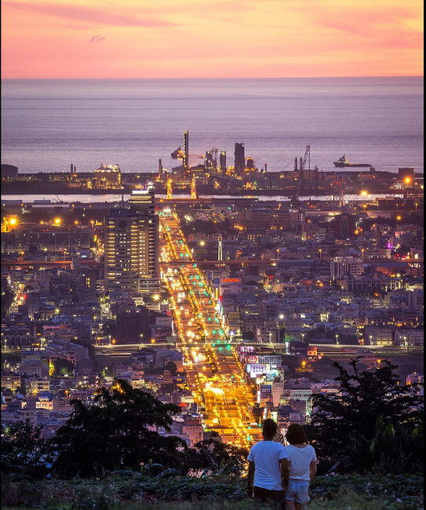

相關景點
望高寮
望高寮又稱「王田坎」，是大肚臺地最高的一處山野，區域內地勢高起、視野良好，西可遠眺臺中港區、南面彰化大肚溪以南平地，並且東臨臺中市區。由於地形的優勢，望高寮可以欣賞到不同時刻的城市風景及天光變化；從日出曙光、夕陽天光再到浪漫夜景，這裡總是以不同面貌的精采光影，隨時歡迎著所有人，光臨望高寮。
- 地 址：台中市南屯區中台路601號

月老廟夜景
《台中月老廟夜景》是許多台中在地人的私房夜景秘境，位在台中大都會公園和九天之樹附近，可以定位台中月老廟夜景或親子部落-月老祠，走中75鄉道，當看到這個立牌時就可以彎進去。彎延小徑有點偏僻，晚上要多加小心！
- 地 址：台中市沙鹿區中75鄉道 
藍色公路
藍色公路不僅夜景絕美，白天因為居高臨下，蜿蜒公路和藍天彼此對映，與黑夜呈現不同的亮眼藍調。自行車友之間，口耳相傳一條藍色公路，此地因爬坡不易，被視為良好練車場地。卻沒料到，入夜以後街燈亮起，竟不是尋常所見的黃白燈，而是一點一點藍紫色的透亮冷光，沿途灑落兩條螢光帶，宛如一串藍寶石項鍊，點亮旅人的返家路。
- 地 址：台中市大肚區大肚藍色公路

Copyright ©賴國峰 All Rights Reserved.